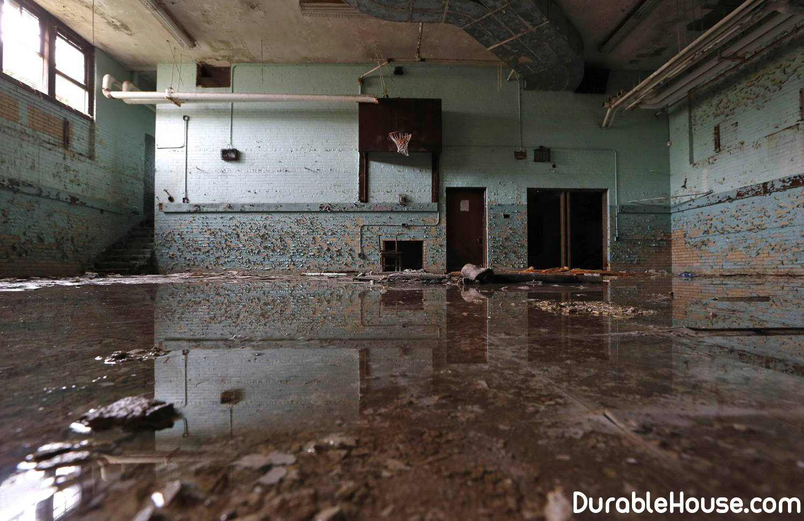

Basement leaks: how to solve this problem
A high level of groundwater very often becomes not just a problem for homeowners, but a real disaster. We offer you a solution to this problem.
One option is to buy a submersible pump. In a sense, it really is way out, but globally the problem does not remove it. The external effect of improvement is, but deep destructive processes continue.
Buying a plot or house, look around. If there is a lake, river or swamp next to it, then, most likely, you need to worry about tapping water from your site. Anyway, sooner or later you you will come to this, and it is better if early, at least, you do not have to sacrifice planting and you can avoid problems with the stores inundated in the cellar.
It is more difficult, when something is already built, then the main task is to divert water from the house. for this we make a wall drainage.
It is a system of underground channels located along the basement. they will take the water away from home. Thus, its level will go down. Drainage bends must go beyond the site, otherwise there will be no sense from your reclamation.
Stacking drainage by sight is a simple matter, it is in practice so, there is nothing complicated, but here a huge amount of excavation can plunge anyone into depression. That is why we advise to conduct drainage work in parallel with the development of the site. The technique that digs a foundation pit, and will also fit in order to dig the grooves under the drainage pipes.
The drainage system on the site should be as much as possible branched, and if it is laid along foundation, then cover all the walls touching the ground along the outer perimeter. Not forget to design the circular water conduit. The drainage pipe is laid on the leveling layer on the perimeter of the house at a distance of 0.8-1 m from the foundation no higher than the level of its sole.
To begin with, it is necessary to excavate a trench, on the bottom of which to scatter and carefully compact sand, giving a constant gradient. To ensure that the network does not become silted, the flow rate of water in the pipe must be not less than 0.2 m per second. This speed is ensured by the corresponding minimum slope laying pipes. The minimum slope of the drain according to construction standards is 0.2% (2 mm per 1 pog. M) in clay soils and 0.3% (3 mm per 1 linear m) - in sandy soils. In practice, however, good water flow make a slope of 0.5-1% (5-10 mm per 1 linear meter).
The geotextile liner is laid on the sand bed, which is leveled along the slope. Over it the washed gravel is filled and leveled with the same slope, in which a groove is made for placement of drainage perforated pipes.
Begin laying the drainage pipeline from the lowest point of laying pipes. At every turn to ensure the washing of the drainage system, a vertical pipe is built in, closed tight cover. Its top is displayed on the height of the blind area. After the drainage pipes are connected with each other, their common bias is checked once again, and also its uniformity, which can be checked by a tight cord.
The installed drainage pipes should be sprinkled with an infiltration layer - washed crushed stone (300 mm) and geotextile canvas - and fill up with large river sand.
Geotextile at the end of the drainage branch is tightly bound around the pipe and fixed polypropylene string.
Collected by drainage pipes, moisture enters the water intake well. He is digging himself low point of the relief, taking into account the topography of the site to a depth of about 3 m. this well is as far from the house as possible, at a distance of at least 6 m.
Attention! On heavy machines, you can not travel in places where the drainage pipes are located.